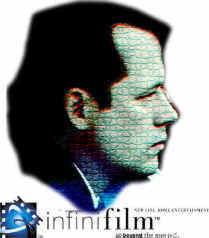
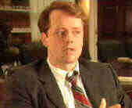
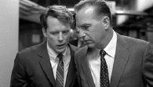
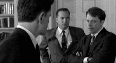
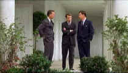
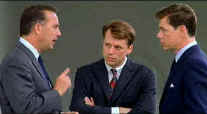
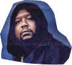

|
Capturing Kennedy
Actor Steven Culp recalls his brilliant
portrayal of Robert F. Kennedy in Thirteen Days
Exclusive Interview by Stu Kobak
July 10, 2001

It's crunch time for an actor when he's called upon to portray a real
life figure for the bigger than life movie theater screen. Every gesture, inflection of the voice,
even the way you scratch your nose, is under the magnifying glass of history. Steven Culp recently
dug into the scrum of history and came out looking fresh and ready for more. Playing Robert F.
Kennedy in Thirteen Days,
a dramatic depiction of the 1962 Cuban Missile Crisis, Culp captured the man with uncanny screen
magic.
The suspenseful 2001 thrilling drama appears to be
the breakthrough film for the actor.
Culp's Bobby Kennedy was one of
the three pillars of Thirteen Days. Culp nails Kennedy with rare insight, not only finding
the mannerisms of the former Attorney General and New York Senator, but digging underneath the
gaunt exterior of the man deep into his psyche. Along with Bruce Greenwood, portraying John
F. Kennedy, and Kevin Costner as
Kennedy confidant Kenny O'Donnell, Culp was part of the troika that the film crisis revolved
around. Culp had high praise for co-stars Greenwood and Costner. But of the three pivotal
performances, it is Culp's that finds rare character insight. He thought hard and clear about Bobby Kennedy using a base of diligent research and an actor’s gifted intuition to enrich
Kennedy as an individual and as a part of thrilling drama that plays out in Thirteen Days.
 "David’s script (David
Self, screenwriter of Thirteen Days) is very factual and you have to dig underneath to
understand the characters. After I delved into it and did a lot of research on the characters, when
I went back to the script—I had about five weeks from the time I was cast until the time we
started shooting and for most of those weeks I threw the script away concentrating on building up
the character--I found was that one thing that I love about Bobby is that he has all these
contradictory colors to him. I realized there was room to get as many of those colors into the
character the way David had written the role,” the actor recalls with succinct analysis.
"I thought one approach you might take with Bobby is that he’s the runt of the litter. He
was the guy in the family who really wasn’t naturally gifted at anything. Who always had to work
harder than anybody—who drove himself and people around him harder than anybody. He was kind of
desperate to please his father and his family. He began to find himself as his brother’s keeper,
the guy who did all the dirty work. That was all knocked out from him when Jack was killed. He was
not the most introspective reflective person. He was always growing and changing.  It’s interesting to note how
Bobby changed and grew with the moment. He’s the voice of caution against the sneak attack on
Cuba yet he was one of the strongest proponents of The Bay of Pigs. Bobby was an incredible guy
capable of growth and change, but some of it does spring out of that feeling that nothing is ever
good enough—that he has to work harder than anybody else to make his mark. And that was something
that you could definitely bring to the script.
"
Turbo-charged Career Performance
Steven Culp punctuates his
response to the question of how many years he's been acting with laughter: "A lot. I spent a
lot of the eighties in New York doing theater—regional theater, off-Broadway, a little bit of
Broadway and some soaps and then came out here and
spent most of the nineties in California. " Culp is a bi-coastal spirit, seeing the career
virtues of both Coasts. At heart, he says, he’s a Virginian. "I came up in the theater and
that’s my background. New York seems to be a better place to come up in theater than Los Angeles.
But there are those who would disagree. Actually since I’ve been in California I’ve done some
of the best theater I’ve ever done, so go figure." Culp again displays his sense of humor
when asked about his inspiration into acting. “I fell in with the wrong crowd. At that time I wanted to write and I wanted to be a rock
and roll star. I was playing guitar and singing in bars and clubs and stuff, but instead of meeting
up with musicians I fell in with actors. I still work at writing--but writers are much more
prolific than I am, I think. For me writing is somewhat like pulling teeth whereas when I am not
acting for a while I’ll be picking up plays and reading them to the walls. You know what I mean.
I can’t stop myself."
Steven Culp's amazing vital
performance in Thirteen Days should turbo-charge his career engine. Though
Culp had played Robert Kennedy before in a small role in the television film Norma Jean and
Marilyn, he did not want to tell the Thirteen Days team about when he auditioned for the
role. "I didn’t know if they knew or not and I wasn’t going to mention it because that can
be as much a hindrance—you know, this guy played him before in this HBO thing, we want someone
fresh, “ recalls Culp. "I spent an entire summer auditioning. I first met with Dianne
Crittenden, the casting director. We read some scenes and she grabbed me and took me next door to
Ilona Hertzberg’s office, who was one of the producers,--I never thought I was going to get cast
until I got cast."
Culp was on the set pretty much
every day once the shoot started with few days off, but the actor was delighted since Thirteen
Days was pure joy for him. Culp’s role demanded constant attention. Sometimes he wanted to
spend down time on the set preparing for the upcoming scene. Even during the shoot he continued his
research into the character, looking at another book about Kennedy or watching videotapes of Bobby
to work on the voice making sure he wasn’t getting sloppy with it. "Bruce and Kevin and I
were researching all the way through. It was a twenty-four hour a day commitment. Especially for me
because I was on a physical and dietary regime the entire time to whittle myself down into this
skinny little Bobby Kennedy body. I’m several inches taller and broader built than he was. I am
actually a little bit taller than Bruce and as you know JFK was much taller than Bobby."
Despite the disparity in historical heights, Culp never noticed an attempt to elevate Greenwood
through the camera lens.
Staying in the moment was a prime example of Culp's acting strength. "I think
just trying to comprehend the moment takes enough of your consciousness. In a way, working on this
role is analogous to these guys dealing with the situation they dealt with. When you’re
first confronted with this (the role) you go, it’s just too enormous--where do I begin? Then you
start to break it down. Break it into pieces and take off manageable chunks, which is the way these
guys dealt with the situation. One early revelation for me on how to approach the character in the
movie was that Bobby was not a reflective guy—he was a man of action—in every scene when the
characters are sort of flummoxed by the situation, I am always saying what do we do, what do we do
next."
Culp Truly Inhabits the Moment
 There are many terrific scenes
in the film and Culp is wired to the character in his every screen moment. He recalls one of his
favorite scenes :“There’s a great
scene early on with the three of us out on the portico, Bobby and Kenny and Jack. It’s right
after we’re first confronted by the missiles and the three of us go out to talk about what
we’re going to do. I love it because everybody is so true to their character yet everything in
the scene is informational and yet you catch so much of who these guys are as individuals and who
these guys are to each other—their relationships through the actions that they take in this
scene. I don’t know if you’ve ever had tragedy in your family, but if you’ve had a sick
mother and the family is gathered around talking about what they are going to do—if you sat and
watched you would learn a lot about their relationships and who they are as people and I think
that’s a great thing that happens in that scene and throughout the movie.”
Culp listens brilliantly in Thirteen
Days. Listening is one of the most underrated aspects of acting, but creating a character is
more than just speaking dialogue; it’s inhabiting the moment, and Culp truly inhabits the moment
and the character.  "Maybe
it’s just being from the theater, having the experience of really trying to alive and find things
to keep you in the moment and to respond to. Maybe that’s it," reflects the actor. Culp can laugh at himself with refreshing pleasure.
"Sometimes I watch myself and I just go, oh would you please relax. Stop listening so hard. I
just try to go in there and have a thread that pulls me through each scene and then the larger
thread that’s pulling me through the entire story."
Culp professes amazement at how well Thirteen Days
takes a well-known historical incident and still make a thrilling drama out of it. “A lot of that
is a credit to begin with to David Self’s script, but it’s also a big credit to Roger Donaldson
and editor Conrad Buff." Following the line of all the characters, understanding the
historical moment requires concentration to maximize the tension. "I think
Thirteen Days demands more of an audience, but in a really good way. The more I see it the
more unabashed proud I am that I’m in this movie. I think it’s a terrific movie. It’s the
kind of movie I loved when I started watching movies. It’s the kind of movie you could watch over
and over again and get something else out of them." Culp
feels that twenty odd years ago the storytelling in Thirteen Days was the norm but nowadays
films are dumbed down in so many ways. "A movie like Chinatown, which is one of
the great movies, would probably be considered much too complicated for an audience to comprehend
today."
"You're Always Looking For Inspiration"
Culp is savvy and knowledgeable about movies. It's not surprising that
when asked about acting inspiration, he thoughtfully acknowledges the enormity of the task.
However, but he did single out a few classic screen icons "James Stewart, Cary Grant, Spencer Tracy, the classic guys. I
found my appreciation for certain actors deepening over the years—Humphrey Bogart, Gary Cooper, I just
saw Cary Grant again in Notorious
and he’s just great in that. Actually there are a lot of actresses I really like—I can barely
pick."
"Getting in to acting in college," remembers Culp, "my
ambition was to be in a Robert Altman movie because I loved the ambiance that he set up and it
seemed to be an actor’s paradise to work in those movies. I’d love to work with M. Night
Shyamalan. He’s the most Hitchcockian of contemporary directors. In that there’s and an
emotional resonance that goes beyond the material. Shyamalan is the only one who has such a strong
emotional pull and seems to be about things that are unnamable and it’s not just a tricked up
thriller plot. Even Unbreakable, which will probably go down as minor Shyamalan in later
years still has an incredible pull. He really hits an emotional place."
Steven Culp talks about movies and acting with excitement. He has a DVD player at home and a
recent favorite was Bertrand Tavernier’s French adaptation of a Jim Thompson novel, Coup de
Torchon. "What an incredible film. I had never seen that before." DVD is inspiring
many movie lovers to delve into cinema history for their viewing pleasure. Culp was impressed by
the new Infinifilm treatment given Thirteen Days, citing the use of footnotes as
particularly interesting." He uses video to constantly study his art. "I’m always
watching. I’m always trying to pick things up. You’re always looking for inspiration."
From New York to LA
Thirteen Days must be considered the highpoint in the
actor's career that includes a frequent starring role as
Clayton Webb in the television series JAG. The toughest point in Culp’s career was when he
moved from New York to California. "I didn’t expect myself to have to start over again on
such a level. I had a lot of really good theater credits and had worked with a lot of the best
playwrights and directors in the business and when I came to Los Angeles; it didn’t seem to count
for much. So I had a hard first couple of years when I was here." Culp's relocation from New
York to California wasn't planned as a career move. "I got a play out of Los
Angeles that was supposed to come to Broadway and didn’t, but I got out here and it was the
middle of winter and I had just left record breaking cold in New York. I was seduced. I’m out
here, doing a play at the Ahmanson Theater, making nice money with per diem with the rented car
driving with the windows down and my short sleeved shirt in February looking at the snow capped
peaks and buildings everywhere with signs saying apartments for rent and I thought to myself, this
is paradise. New York was the total opposite in every way. I came back again several times for work
but I was spending more money that I was making living on both coasts and then my wife who is a
costume designer was getting a lot of work in California so I finally just decided to move. Once I moved all the work seemed to dry up. I went
through a couple of lean years and I was doing a lot of theater for free in Los Angeles through
playwright and director friends, reconnecting with why I started acting in the first place and I
started thinking, you know…..when I was younger, doing a lot of good things in New York I was
always dissatisfied…I was thinking why can’t I have that—the grass was always greener and
during the slow period I decided if it ever comes around again I’m going to make a point to have
a good time and to say thank you and to appreciate it. And it’s starting to come around
again and I am having a good time and enjoying what I do and to relax about it," the actor
enthuses.
Hoping to parlay his success with Kevins, next up for the talented Culp is
a role alongside Kevin Kline in The Palace Thief. The drama just finished shooting in New
York and is scheduled for a 2002 theatrical release.
Special thanks to Steven Culp for graciously sharing his thoughts with our
readers and to Amy Gorton of New Line and Nan Leonard of Nanette Leonard Public Relations for
coordinating and making this interview possible.
|
|
|
|

Selections from the Feature Archive
include articles on Akira Kurosawa, Frank
Darabont, Blonde Bimbos, Hollywood Street Gangs, or Vietnam: The
Hollywood Pariah, and many more....

Is North by Northwest Hollywood's definitive exploration of the nose? From schnozzles to
beezeers, film mavens make the most of the foremost. Click on Mount Hitchcock for more.

The Movie Poster
Archive includes extensive poster images from the films of stars like Susan Hayward, Kirk Douglas,
Katharine Hepburn and many more. Our
featured star is Kirk Douglas.

Ghost
Dog: Way of the Samurai

Ancient Japanese samurai tradition compared to new world Italian
mobsters filtered through the imagination of Jim Jarmusch. Forest Whitaker is outstanding.

 Have you visited Home Theater
Talk lately? One of the friendliest places on the Net for Home Theater and DVD discussion, you
can get help for installation problems or simply share your opinions with other Vidiots. Have you visited Home Theater
Talk lately? One of the friendliest places on the Net for Home Theater and DVD discussion, you
can get help for installation problems or simply share your opinions with other Vidiots.

ISF Monitor Calibrations in the
Tristate New York area. Lots of hardware info and frequent hardware peaks from video expert Kevin
Miller.They may be judgmental, but that's the point, isn't it. Lots of DVD reviews plus news and
more.

Comprehensive DVD review database. Easy to use
interface with specific region searches.
DVDRAMA
One of France's outstanding DVD resources. Par le vous DVD?

You won’t want to miss the online iF Magazine. You may have guessed iF stands for
independent film.
 Brad Lang continues to add more interesting material to the extensive
collection at Classic
Movies. Everything from actors and actress to your favorite directors is
linked at the site. Brad Lang continues to add more interesting material to the extensive
collection at Classic
Movies. Everything from actors and actress to your favorite directors is
linked at the site.

DVD
Demystified makes it all clear.The official Internet DVD FAQ for the rec.video.dvd
Usenet newsgroups.
DiscReviews.com
is a new DVD review site
with a slick interface.
DVD Dimensions sells DVDs from an easy
to use online interface

The DVD Forum is an international association of hardware
manufacturers, software firms and other users of Digital Versatile Discs (the "DVD
Format"), created for the purpose of exchanging and disseminating ideas and information about
the DVD Format and its technical capabilities, improvements and innovations.
.
Images is a non-commercial Web site created for everyone who enjoys movies and popular culture.
Images is published quarterly; however, new reviews will appear each week, so check back often.

The official site for information about the great comic director. A treat for connoisseurs of
classic Hollywood madcap.

DVD packaging can be the bane of the collector. Click on Rants and
Raves for more.
The DVD Package

Click on the DVD MIA symbol for
profiles of DVDs missing in action.
Add films to the DVD MIA Master List by filling out
a simple form. Click Here
|